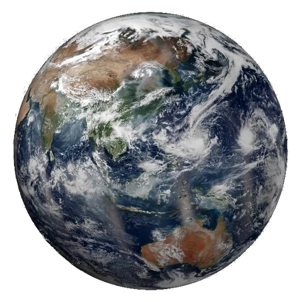

A little perspective
The solar system,
right now.
From the Moon next door to thousands of distant worlds, galaxies and the edge of the observable universe. Pick a destination and follow your curiosity.
NOW
Positions calculated for
All times shown in UTC
The view from above
Our planetary neighborhood
Distances to scale. Markers enlarged.
Replay observed clouds
Replay changes the cloud image only. Orbit and ISS positions keep the map’s selected time. Open the larger Earth viewer ↓
A human outpost
The International Space Station
The green marker is a timestamped ISS position, refreshed about every 15 seconds while this Earth view is open. Zoom to low Earth orbit to separate it from Earth’s marker. Earth’s Moon is much farther away.
Waiting for the satellite feed.
- Altitude
- Unavailable
- Speed
- Unavailable
- Position time (UTC)
- Unavailable
Feed: Where the ISS at? This first satellite layer tracks the ISS only. A past or future date pauses the feed; missing or old data is never shown as live.
Observed clouds
Earth from a satellite
These clouds come from satellite observations. NOAA's GeoColor view faces the Americas and updates about every ten minutes. Daytime uses visible imagery; at night, infrared observations show clouds over a background that includes city lights. NASA EPIC shows the sunlit hemisphere, with a longer publication delay.
The photograph keeps its satellite viewing angle. It is not aligned to the map's orbital plane, and it does not show the whole globe at once. A selected past or future orbital date uses the historical illustration instead.
Open an Earth close-up to load the latest image.
Watch the past 24 hours ↓Imagery: CIRA/NOAA and NASA EPIC Team. Original capture time is shown after the image loads. This feed is separate from the calculated orbital clock.
A changing star
Latest space weather
Solar wind is charged material streaming from the Sun. Spacecraft upstream of Earth measure its speed and magnetic field. The Kp index summarizes how disturbed Earth’s magnetic environment is, from 0 to 9.
These are NOAA’s latest published readings, independent of the date chosen for the orbital map. A southward magnetic field can help solar-wind energy enter Earth’s magnetic environment.
Readings load when this section comes into view.
Source: NOAA Space Weather Prediction Center. Checked every five minutes while this page is visible. Each reading keeps its own observation time; unavailable values are never replaced with zero.
The Moon at work
Why does the ocean rise and fall?
The Moon pulls a little more strongly on Earth’s near side than on its center, and a little less strongly on the far side. That difference stretches the oceans into a broad pattern with two high-tide regions.
The Sun adds a smaller tidal effect. Around new and full moon, the effects reinforce each other, producing a larger tidal range called a spring tide. Around the quarter moons, they partly offset, giving a smaller neap tide. “Spring” here has nothing to do with the season.
Earth rotates through this changing pattern, but coastlines, ocean depth and weather reshape it. This explains the forces; it cannot tell you the tide time at your beach.
Tidal forces also flex moons. Inside Io and Enceladus, that repeated flexing helps generate heat.
An exaggerated, idealized diagram. Sizes, separations and ocean bulges are not to scale. Real tidal bulges do not align perfectly with the Moon.
A field guide to the wider universe
Open a topic to explore the science behind the places on the map.
Beyond Neptune: the Sun's distant outskirts
Neptune is not the edge of the solar system. Beyond the Kuiper Belt, the proposed Oort Cloud may contain a vast, roughly spherical reservoir of icy bodies, thousands to perhaps 100,000 astronomical units from the Sun. Its existence is inferred from comet orbits; nobody has photographed the cloud as a whole.
The heliosphere is a different boundary: a bubble shaped by the solar wind and magnetic field. Crossing its outer boundary, the heliopause, reaches interstellar space, while the Sun's gravity still holds objects much farther away.
How we discover planets around other stars
A transit is a tiny dip in starlight when a planet crosses its star. Radial velocity measures changes in a star's motion caused by an orbiting planet's gravity. Together, suitable observations can constrain a planet's size, mass and density without showing its surface.
Discovery methods favor some worlds over others. Big planets close to their stars are often easier to find, and most systems never line up for transits. Blank space on this map is not proof of empty space. Exoplanet appearances and orbital angles here are illustrations, not resolved surface photographs.
Our galaxy and the larger neighborhoods
The Milky Way is a disk of stars more than 100,000 light-years across. Our solar system is one small part of it. The Milky Way, Andromeda, Triangulum and many dwarf galaxies belong to the Local Group, a collection held together by gravity.
Farther out, galaxy clusters can contain hundreds or thousands of galaxies, hot gas and dark matter. Clusters and vast filaments surround enormous voids in the cosmic web. The landmarks in this explorer are a small selection, not a complete census of these structures.
Nebulae, star clusters and stellar lives
Gravity can gather cold gas and dust into new stars. Many are born together in clusters, so neighboring stars can share a common origin. A glowing nebula may surround young stars, but other nebulae are shells shed by aging stars or the wreckage of explosions.
A star's mass strongly shapes its future. The Sun will eventually shed its outer layers and leave a white dwarf. Some much heavier stars explode as supernovae, leaving neutron stars or black holes and spreading material that can join future generations of stars.
Black holes and the light around them
A black hole's event horizon is a boundary beyond which light cannot escape. The bright material in black-hole images is outside that boundary: hot gas and light bent by strong gravity. Astronomers also study the motions of nearby stars and gravitational waves to uncover otherwise invisible black holes.
M87 contains a supermassive black hole whose surroundings have been imaged by the Event Horizon Telescope. A quasar is an exceptionally luminous active galactic center powered by material feeding a supermassive black hole. Its light comes from that energetic environment, not from inside the horizon.
Looking farther also means looking back
Light takes time to travel. Seeing a galaxy millions of light-years away means receiving light it emitted millions of years ago. On the largest scales, cosmic expansion stretches that light and makes the relationship between distance and travel time more complicated.
The universe is about 13.8 billion years old, yet the observable region is roughly 92 billion light-years across today because space has expanded during the journey. The horizon ring is a scale guide, not a physical wall. Science has no reliable measurement of the size of the entire universe.
Reading the map
Space is mostly space.
The planets follow their calculated positions for the selected instant. Zoom out beyond the outer solar system to reach a chart of selected stars, then open one to explore its planets. Use “Close-up of” or double-tap a planet to explore its neighborhood.
The Moon and Jupiter’s four Galilean moons use calculated positions. Other moon atlases and exoplanet systems show orbital sizes with illustrative placements, clearly labeled in each view. There is no single useful scale for both planetary orbits and the vast distances between stars, so the chart changes units at that boundary.
One astronomical unit (AU) is 149,597,870.7 kilometers, about the average Earth to Sun distance. Even at this scale, the planets would be too small to see, so their markers are enlarged. Use a normal mouse wheel or trackpad gesture to scroll the page. To zoom the map, use its + and − buttons, hold Ctrl or Command while scrolling, or pinch on a touchscreen. Keep pinching to move between scales. Double-tap or double-click a planet to explore its neighborhood. Use search to visit thousands of published planetary systems and selected nebulae, galaxies and clusters. Keyboard users can focus the map and use the arrow keys to pan, + and − to zoom, and Home to reset.
All eight planets, by the numbers
| Planet | Sun (AU) | Earth (AU) | Longitude |
|---|
A day on Earth
Earth in motion.
Follow observed clouds and the changing day and night across Earth’s Americas-facing hemisphere. This viewer plays NOAA’s available images from the past 24 hours, independently of the orbital map’s date.

NASA VIIRS · preview
The satellite sequence loads when this viewer comes into view.
Ready when you are.
What am I seeing?
Daytime colors approximate visible light. At night, infrared observations reveal clouds over a background that includes static city lights. These are real satellite frames, with no generated cloud motion or artificial frames between observations.
Images are usually produced every ten minutes. Gaps or publication delays can shorten the available sequence. The timestamp always identifies the image on screen. Playback waits for images to load and rests while this viewer and the zoomed Earth map are off screen.
Imagery credit: CIRA/NOAA. The sequence shows the GOES-19 hemisphere, rather than all of Earth at once.
How the positions are calculated
This educational map uses Astronomy Engine 2.1.19, with VSOP87-based planetary calculations designed for about one arcminute of accuracy. It is a calculated view of the solar system, not a live telescope image.
Calculated planet, lunar and Galilean-moon views look down from the north side of the fixed J2000 ecliptic plane. They show geometric positions at the same instant, without light-time correction. The view flattens their height above or below the plane. Star coordinates are catalog positions projected onto that plane, so apparent map separations can be smaller than the true distances.
Four selected small bodies use a simple Kepler orbit propagated from NASA/JPL orbital elements retrieved on 25 October 2026. These estimates appear only within two years of their element epoch and do not include planetary perturbations. They are educational, not live tracking or impact predictions. Moon-atlas distances and exoplanet orbital sizes come from NASA/JPL and the NASA Exoplanet Archive; their illustrative placements do not show current positions.
For research, navigation or high-precision ephemerides, use NASA JPL Horizons. This map accepts dates from 1800 through 2050.
Imagery credits and the larger atlas
Enhanced graphics use real mission imagery, cropped and resized for this display. Mercury and grayscale Venus: NASA/Johns Hopkins APL/Carnegie Institution of Washington. Earth: NASA Goddard/VIIRS composite. Mars: NASA/JPL-Caltech/USGS. Jupiter: NASA/JPL/University of Arizona, Cassini true-color mosaic. Saturn: NASA/JPL/Space Science Institute, Cassini. These base images are historical photographs and composites. The separate Earth cloud option uses the latest published NOAA or NASA observations, with their capture times. Decorative glows do not measure a planet’s atmosphere.
Uranus and Neptune use the corrected-color 2024 image by Patrick Irwin/University of Oxford/NASA, cropped from the lower row and used under CC BY 4.0. Original image and credit. This avoids the exaggerated blue in some familiar Voyager releases.
The larger catalog is a 25 October 2026 NASA Exoplanet Archive snapshot. Only systems with published stellar distances and planetary orbit sizes and periods can be mapped here. Missing measurements are not invented. Orbit angles and exoplanet colors are illustrative. Deep-sky centers and approximate distances come from NASA educational catalogs and CDS SIMBAD; estimates differ between studies.
The inferred Oort Cloud is a region estimated from comet orbits. The cosmic scale rings are comparisons, not physical walls. The observable horizon has an approximate present-day radius of 46 billion light-years; the size of the entire universe is unknown. Expansion means present-day distances differ from light-travel times. This is a selection of measured objects and a scale guide, not a complete galaxy survey.